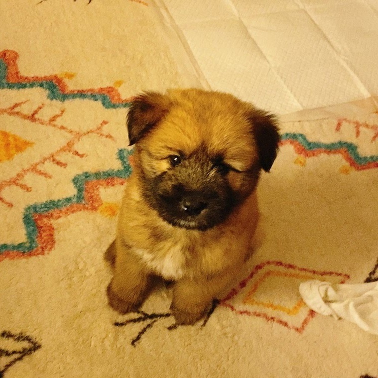

Yangang The Street Dog
The life of a dog named Yangang.
Introducing Yangang!

Isn't she adorable?
Who is Yangang?!
Yangang is a street dog saved from the street and been kept in the street dog centre.
She was brought to home from this facility at an age of 3 months!
The goal was to get rid of her frustration to people. She was very sensitive.
But as she has grown up, she has got back her smile!
What kind of life is Yangang living now?
Yangang needs extra care since she has traumas from her childhood. She is very shy and sensitive to human beings. She gets way more stress from getting seperated with her family.
She wasn't left alone in the house after she was adopted and she is now starting to like people who are kind to her. However, she still awares those people who are aggressive. She is not
used to getting too much love from strangers so a slow relationship is needed! She now likes to go outside and explore the nature and making new friends! She is very shy that she never gets close to
other dogs by herself but I know from her looks that she wants other dogs to get close to her first! She is very cute with this characteristic. I hop she only have happy life for the rest of time.